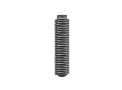
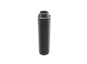
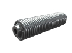

Торсионные пружины для секционных гаражных ворот
Изготовление торсионных пружин на заказ партиями от 1-й штуки от 1-го дня.
Выполним по разнообразным параметрам, чертежам или образцу, фото, эскизу.
(сроки выполнения заказа обговариваются с каждым клиентом индивидуально)
- 
- 
- 
Изготовление и производство торсионных пружин
Производственная компания ООО «Индустриал Спрингс» предоставляет услуги по изготовлению торсионных пружин для секционных гаражных ворот на заказ с последующей доставки по всей территории Украины. Торсионные пружины можно заказать и купить у нас крупными и мелкооптовыми партиями по доступным ценам.
Применение торсионных пружин
- - Гаражные подъемно-секционные ворота;
- - Промышленные подъемно-секционные ворота;
- - Секционные ворота с электроприводом;
- - Ворота марок Alutech, DoorHan, Hormann.
Применение торсионных пружин
- - Создают оптимальный баланс веса створок секционных гаражных ворот;
- - Изготавливаются из высококачественных пружинных сплавов и стали соответствующих нормам ГОСТа;
- - Используются в стандартных конструкциях подъемно-секционных ворот.
- - Покрытие: оцинковка, порошковое покрытие, окрашивание для защиты пружин от коррозии.
Заказать и купить торсионные пружин для секционных гаражных ворот Вы можете оформив заявку на расчет и изготовление. Наши специалисты проконсультируют Вас, для точного составления технического задания к заказу, где будут учтены все необходимые параметры. Для оформления заказа свяжитесь с мененджером нашей компании через форму заявки или по одному из телефонов: 066 283 80 82, 097 305 81 85, 0532 591 590.